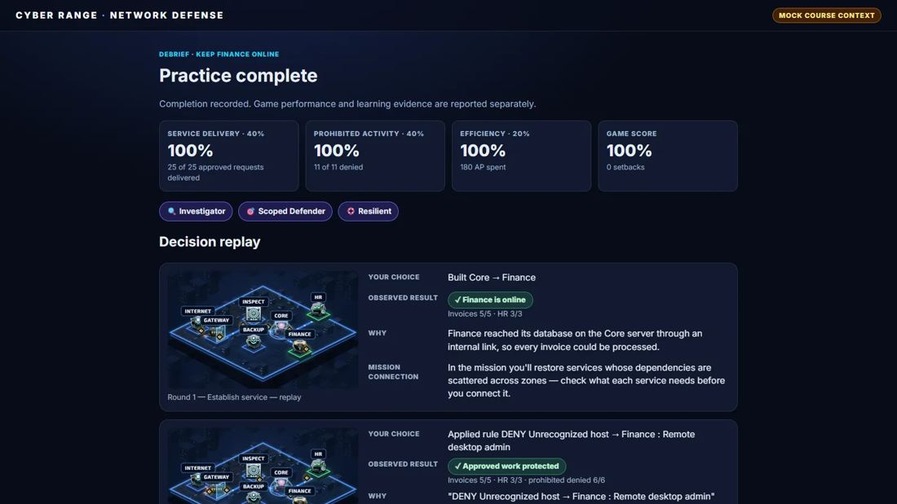

Runs in your browser · sample content

Game 1 of 8 · Isometric strategy
Network Defense: Keep Finance Online
Teaches: How routes and dependencies keep a service up, how to read evidence, and how to write an access rule that stops the attacker without stopping the business.
Evidence on screen“Source 198.51.100.23 is not on any approved list and is outside the company network.” “Destination: Finance — Remote desktop admin (RDP 3389).” “Pattern: repeated sign-in attempts, each with a different username.”
After a common mistake“You connected Finance straight to the Gateway. Invoices reached Finance, but Finance couldn’t reach its database on the Core server, so each one failed. Services depend on other services — a path from the internet isn’t enough.”
Final challenge, no hints“Which single rule best fits the policy?” Answer: DENY 203.0.113.200 → HR : Admin console
- How it is scored
- 40% service delivered, 40% prohibited activity denied, 20% efficiency. Two reasoning checkpoints and the final challenge are recorded separately as learning evidence.
- Proved by tests
- “Blanket blocking cannot earn the best result” and “backup routes preserve the access policy”, each checked on 8 seeds. 32 tests.
- Depth and replay
- A new seed changes the traffic order, the attacker’s address and service, and which link fails.
- Why it sticks
- The learner watches a rule succeed or fail on live traffic, so cause and effect are remembered together. Firewall and access rules, taught through consequences.